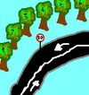

Escuela de Ingenieros de Caminos, Canales y Puertos de Madrid
 De: La Frikipedia, la enciclopedia extremadamente seria.
De: La Frikipedia, la enciclopedia extremadamente seria.

|
ATENCIÓN
Este artículo es un truño, es sólo un esbozo de un artículo o es demasiado corto o el que lo ha escrito se cree que esto es un vil diccionario. Su autor puede estar bajo los efectos del alcohol o ser un inútil. Quizá haya pistas en la discusión. ¡Mejora la Frikipedia ampliando y mejorando el artículo!
|
Escuela (NO FACULTAD, RECORDAD) situada en el confín de Ciudad Universitaria en Madrid, y a más grandes rasgos en el confín de Europa, ya que Bolonia jamás invadirá nuestra bien amada escuela mientras quede un irreductible Caminero.
Historia
La escuela la creó Franco en el 68. Desde entonces no ha pasado absolutamente nada. Las aulas son las mismas, las clases son las mismas, el plan académico es el mismo (si, de 6 años). Es de particular importancia mencionar que debe ser la única Universidad del mundo donde no se cuelgan las notas en internet (creemos que aún no ha llegado a la escuela).
Gente que habita la escuela
El honorable director del centro
Frikis y feas. Aparte de los profesores, que viven congelados en la Torre desde el 68. Dato interesante: No hay emos, no hay pijas. Últimamente están floreciendo las pijas que van de indies porque escuchan Franz Ferdinand.
Edificios
 Los examenes requieren crear planos de gran complejidad
- La Torre, según cuentan las Leyendas en la Torre se conservan los profesores criogenizados con sus métodos de enseñanza desde la fundación de la escuela. Novedad, han puesto un ascensor. Inauguración? 30 de Diciembre de 2034 (junto con la nueva cafetería y el aula de exámenes nueva)
Otras leyendas que corren por la escuela son la de que inicialmente estaría cubierta de mármol entera, pero ese mármol misteriosamente desapareció
Todo parece indicar que iba a ser una puta cárcel.
- La Biblioteca Es un puto antro infernal, con claraboyas que crean una atmósfera de sudor de ingeniero y lágrimas de estudiantes fracasados que hace imposible respirar ahí dentro. Es pequeña y las mesas son una mierda.
- El aula de exámenes Los taburetes (todos cojos) de 1 metro de alto y las mesas inclinadas llenas de mierda y pintadas de 20 años atrás hacen de esta PLANTA de la escuela un lugar idóneo para hacer un examen de 4 horas.
- El puente de la entrada (DEP) Manda cojones que en una escuela de ingenieros se caiga un puente en la puta puerta de la escuela.
¿Sabías que...
- ...te vas a pasar tu puta vida en la Universidad?
- ...echan al 30% de los que entran en primero?
- ...los de Rugby NUNCA hacen sangriadas gratis?
- ...según las estadísticas Caminos es la carrera con más llorones y nenazas que no aprueban nada en junio y se van antes de que les echen?
- ...según un último estudio el ano y tracto rectal de los aspirantes a Física dilata un 34,78% más que el del resto de universitarios?
Autor(es):
- Doctor grijander
- Viento
- Azulejos
- ElInventor
- Harry El del Pote
- Gñapero Solitario
- Gerri
- Petakuu
- MonoAlien
Frikipedia 2005-2016, Licencia
GFDL 1.2 - Extraído por FrikiLeaks